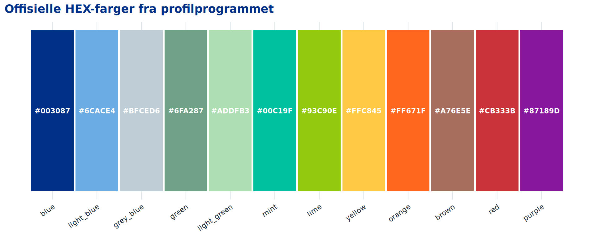
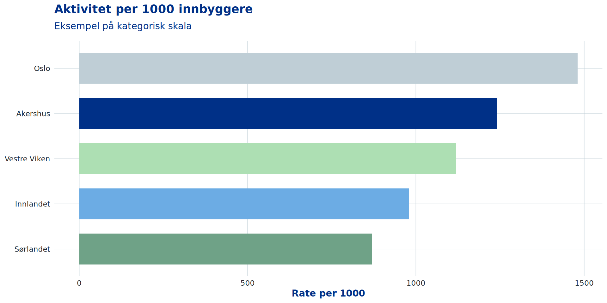
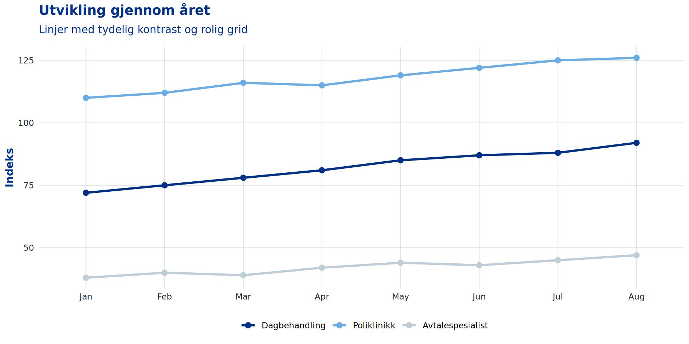
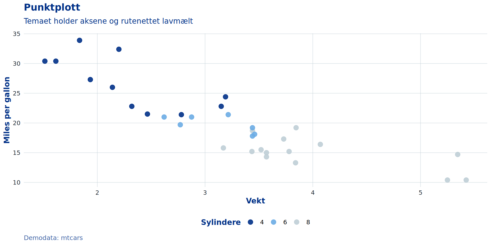
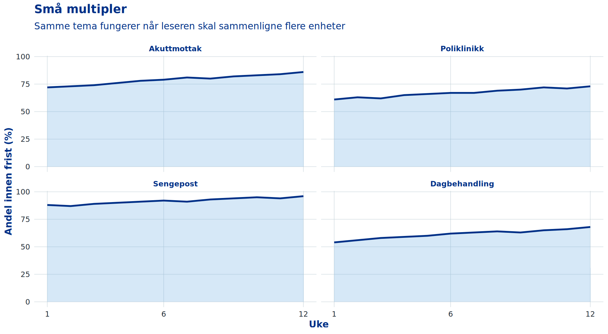
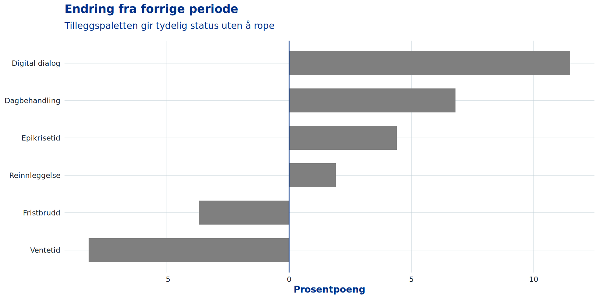
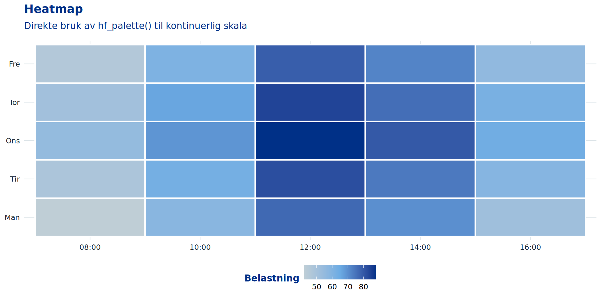
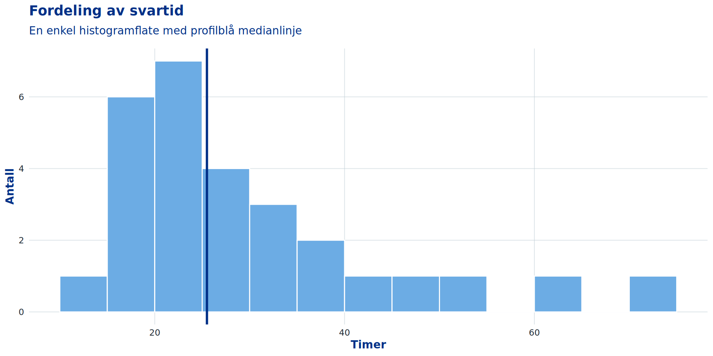
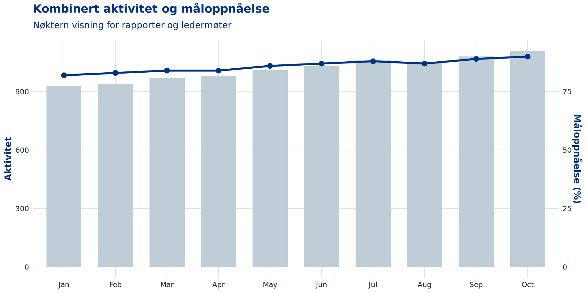

ggplot2-tema og fargeskalaer for helseforetak
gghf gir en liten, praktisk overflate for grafer som skal føles hjemme i helseforetakenes nasjonale profil:
theme_hf()hf_palette()scale_colour_hf() / scale_color_hf()scale_fill_hf()palette_df <- data.frame(
name = names(hf_palette()),
colour = unname(hf_palette()),
x = seq_along(hf_palette())
)
ggplot(palette_df, aes(x, 1, fill = name)) +
geom_tile(width = 0.96, height = 0.82) +
geom_text(aes(label = colour), colour = "white", fontface = "bold", size = 3) +
scale_fill_manual(values = hf_palette(), guide = "none") +
scale_x_continuous(NULL, breaks = palette_df$x, labels = palette_df$name) +
scale_y_continuous(NULL, breaks = NULL) +
coord_cartesian(clip = "off") +
labs(title = "Offisielle HEX-farger fra profilprogrammet") +
theme_hf(base_family = "sans") +
theme(
axis.text.x = element_text(angle = 35, hjust = 1),
panel.grid = element_blank()
)
df_bar <- data.frame(
foretak = c("Akershus", "Innlandet", "Oslo", "Sørlandet", "Vestre Viken"),
rate = c(1240, 980, 1480, 870, 1120)
)
ggplot(df_bar, aes(reorder(foretak, rate), rate, fill = foretak)) +
geom_col(width = 0.68) +
scale_fill_hf(guide = "none") +
coord_flip() +
labs(
title = "Aktivitet per 1000 innbyggere",
subtitle = "Eksempel på kategorisk skala",
x = NULL,
y = "Rate per 1000"
)
df_line <- expand.grid(
month = factor(month.abb[1:8], levels = month.abb[1:8]),
group = c("Dagbehandling", "Poliklinikk", "Avtalespesialist")
)
df_line$value <- c(
72, 75, 78, 81, 85, 87, 88, 92,
110, 112, 116, 115, 119, 122, 125, 126,
38, 40, 39, 42, 44, 43, 45, 47
)
ggplot(df_line, aes(month, value, colour = group, group = group)) +
geom_line(linewidth = 1.1) +
geom_point(size = 2.4) +
scale_colour_hf() +
labs(
title = "Utvikling gjennom året",
subtitle = "Linjer med tydelig kontrast og rolig grid",
x = NULL,
y = "Indeks",
colour = NULL
)

df_facets <- expand.grid(
uke = 1:12,
enhet = c("Akuttmottak", "Poliklinikk", "Sengepost", "Dagbehandling")
)
df_facets$andel <- c(
72, 73, 74, 76, 78, 79, 81, 80, 82, 83, 84, 86,
61, 63, 62, 65, 66, 67, 67, 69, 70, 72, 71, 73,
88, 87, 89, 90, 91, 92, 91, 93, 94, 95, 94, 96,
54, 56, 58, 59, 60, 62, 63, 64, 63, 65, 66, 68
)
ggplot(df_facets, aes(uke, andel)) +
geom_area(fill = hf_palette("light_blue"), alpha = 0.28) +
geom_line(colour = hf_palette("blue"), linewidth = 1) +
facet_wrap(~ enhet, ncol = 2) +
scale_x_continuous(breaks = c(1, 6, 12)) +
labs(
title = "Små multipler",
subtitle = "Samme tema fungerer når leseren skal sammenligne flere enheter",
x = "Uke",
y = "Andel innen frist (%)"
)
df_div <- data.frame(
indikator = c(
"Ventetid",
"Fristbrudd",
"Reinnleggelse",
"Dagbehandling",
"Epikrisetid",
"Digital dialog"
),
endring = c(-8.2, -3.7, 1.9, 6.8, 4.4, 11.5)
)
df_div$retning <- ifelse(df_div$endring >= 0, "Bedring", "Nedgang")
ggplot(df_div, aes(reorder(indikator, endring), endring, fill = retning)) +
geom_col(width = 0.64) +
geom_hline(yintercept = 0, colour = hf_palette("blue"), linewidth = 0.45) +
scale_fill_manual(
values = c(Bedring = hf_palette("mint"), Nedgang = hf_palette("red")),
guide = "none"
) +
coord_flip() +
labs(
title = "Endring fra forrige periode",
subtitle = "Tilleggspaletten gir tydelig status uten å rope",
x = NULL,
y = "Prosentpoeng"
)
df_heat <- expand.grid(
dag = factor(c("Man", "Tir", "Ons", "Tor", "Fre"), levels = c("Man", "Tir", "Ons", "Tor", "Fre")),
time = factor(sprintf("%02d:00", seq(8, 16, by = 2)), levels = sprintf("%02d:00", seq(8, 16, by = 2)))
)
df_heat$belastning <- c(
42, 48, 55, 51, 46,
58, 63, 69, 66, 61,
77, 82, 88, 84, 79,
70, 74, 80, 76, 72,
52, 59, 64, 62, 56
)
ggplot(df_heat, aes(time, dag, fill = belastning)) +
geom_tile(colour = "white", linewidth = 0.8) +
scale_fill_gradientn(
colours = unname(hf_palette(c("grey_blue", "light_blue", "blue"))),
name = "Belastning"
) +
labs(
title = "Heatmap",
subtitle = "Direkte bruk av hf_palette() til kontinuerlig skala",
x = NULL,
y = NULL
) +
theme(panel.grid = element_blank())
df_dist <- data.frame(
svartid = c(
14, 16, 17, 18, 19, 20, 20, 21, 22, 22, 23, 24, 24, 25, 26,
28, 29, 30, 31, 32, 34, 36, 38, 42, 48, 55, 63, 74
)
)
ggplot(df_dist, aes(svartid)) +
geom_histogram(
binwidth = 5,
boundary = 0,
fill = hf_palette("light_blue"),
colour = "white",
linewidth = 0.5
) +
geom_vline(
xintercept = median(df_dist$svartid),
colour = hf_palette("blue"),
linewidth = 1.1
) +
labs(
title = "Fordeling av svartid",
subtitle = "En enkel histogramflate med profilblå medianlinje",
x = "Timer",
y = "Antall"
)
df_combo <- data.frame(
måned = factor(month.abb[1:10], levels = month.abb[1:10]),
aktivitet = c(930, 940, 970, 980, 1010, 1030, 1060, 1050, 1080, 1110),
måloppnåelse = c(82, 83, 84, 84, 86, 87, 88, 87, 89, 90)
)
ggplot(df_combo, aes(måned)) +
geom_col(aes(y = aktivitet), fill = hf_palette("grey_blue"), width = 0.68) +
geom_line(aes(y = måloppnåelse * 12, group = 1), colour = hf_palette("blue"), linewidth = 1.15) +
geom_point(aes(y = måloppnåelse * 12), colour = hf_palette("blue"), size = 2.6) +
scale_y_continuous(
"Aktivitet",
sec.axis = sec_axis(~ .x / 12, name = "Måloppnåelse (%)")
) +
labs(
title = "Kombinert aktivitet og måloppnåelse",
subtitle = "Nøktern visning for rapporter og ledermøter",
x = NULL
)
Pakken inkluderer ikke logoer, prikkekors eller andre beskyttede avsendermerker. Den gir bare ggplot2-primitiver: farger, skalaer og tema.